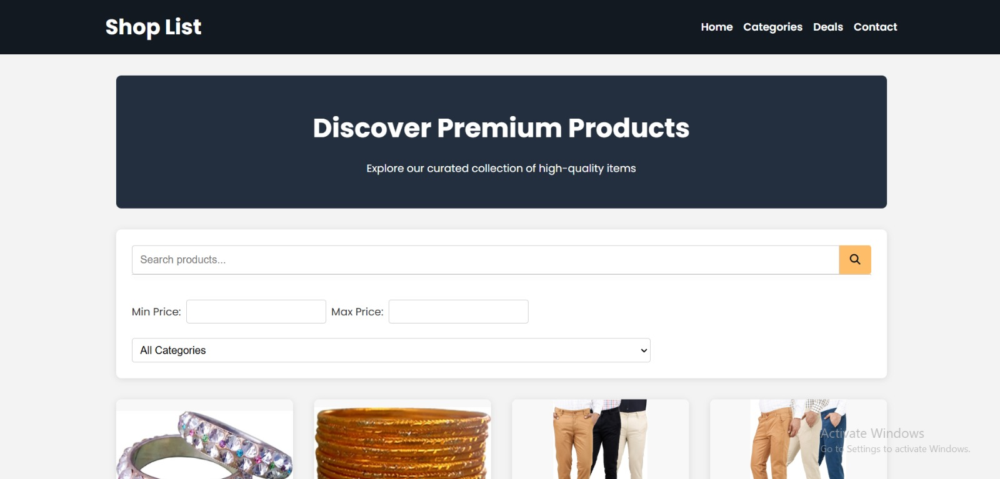
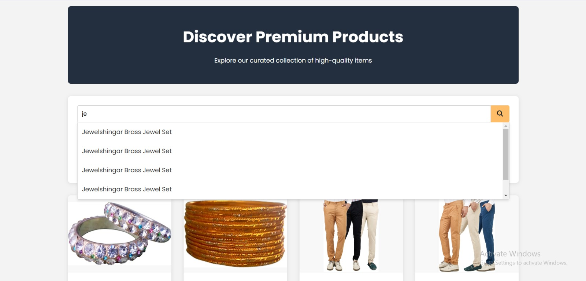
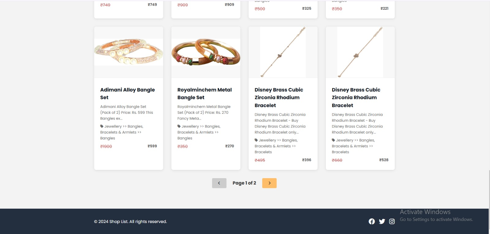
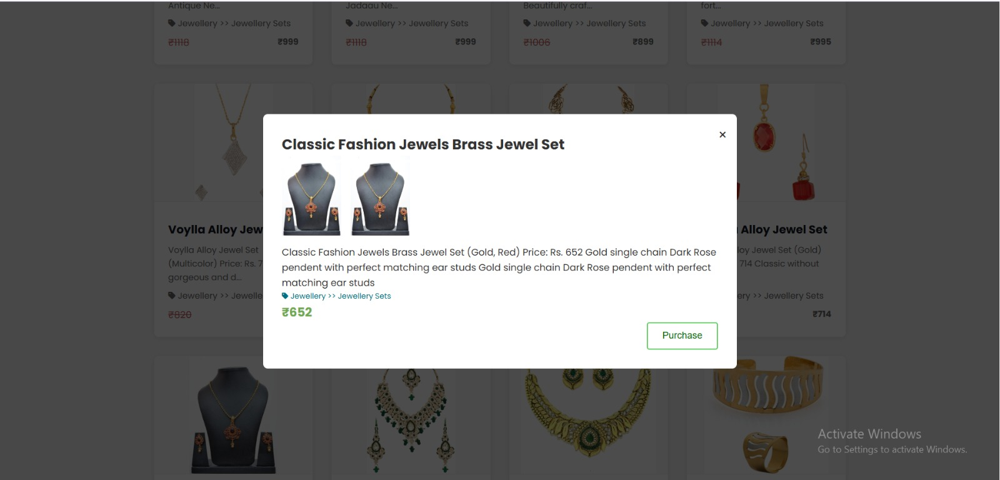
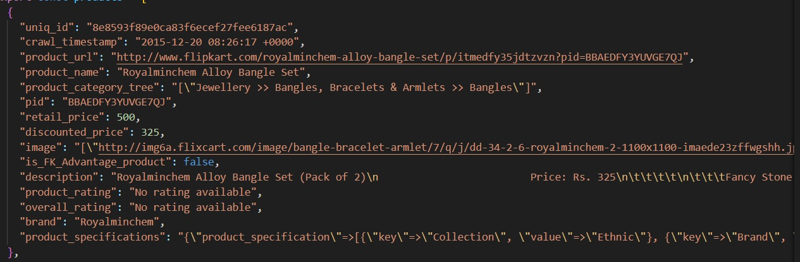

Exercise - 3: SSG (Static Site Generation)
Approach
- Look for a fitting data setfrom kaggle
- Convert csv to JSON using a tool from the browser
- Setup project environment
- Load and show data on the website from the imported JSON file
- Add search functionalities
- Use Fuse.js for the search functionaity
- Select fields which would fit for filter
- Good looing UI/UX for the client
Handling Large Catalogs
- One approach can be dividing the Catalogs into categories and storing it separately
- Fetching and displaying the categories according to the user's filter option and likings.
UI/UX



Individual Products

CSV DATA (Products Data)
